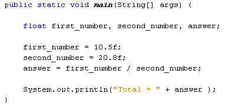

The double value we used can store really big numbers of the floating point variety. Instead of using double, float can be used. When storing a value in a float variable, you need the letter "f" at the end. Like this:
float first_number, second_number, answer;
first_number = 10.5f;
second_number = 20.8f;
So the letter "f" goes after the number but before the semicolon at the end of the line. To see the difference between float and double, see below.
With the variables you've been using, you can use the following symbols to do calculations:
+ (the plus sign)
- (the minus sign)
* (the multiplication sign is the asterisk sign)
/ (the divide sign is the forward slash)
Try this exercise:
Delete the plus symbol that is used to add first_number and second_number. Replace it with the symbols above, first the minus sign, then the multiplication sign, and then the divide. The answer to the final one, the divide, should give you a really big number.
The number you should get for divide is 0.5048076923076923. This is because
you used the double variable type. However, change the double to float. Then
add the letter "f" to the end of the numbers. So your code should
look like this:

When you run the above code, the answer is now 0.5048077. Java has taken the first 6 numbers after the point and then rounded up the rest. So the double variable type can hold more numbers than float. (Double is a 64 bit number and float is only 32 bit.)
In the next lesson, you'll learn about the importance of Operator Precedence.